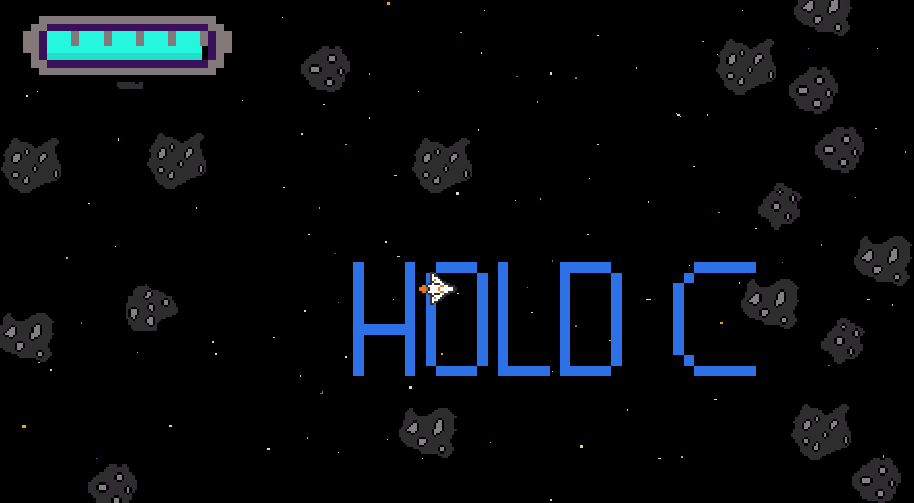
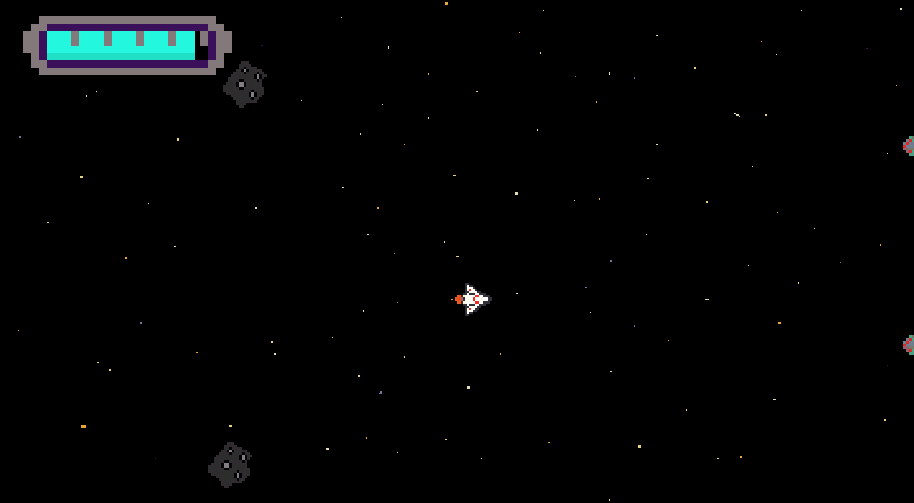

I'll Be Fine
Mayday is a bullet hell game I made on my own where each bullet you shoot depletes a health bar that's already ticking down over time. I aimed to place a simple twist on a common genre to add an interesting decision to every bullet you shoot or obstacle you dodge.
I made all the assets myself using tools such as Piskel for art and Bfxr for sound effects. This project was coded with Unity using C#.
Through this project, I gained familiarity with a variety of tools used by artists, which has helped me communicate and understand with visual and audio artists in the collaborative projects I've done after this one. On a technical level, I took the opportunity to learn about state machines, coroutines, and other event-based patterns.
To play this short browser-based game, go to this link: https://louiser.itch.io/mayday or play in the window above. The code can be viewed on this GitHub page: https://github.com/albanezla08/mayday.

Shooting example

Enemy attacks

State-based enemy behavior